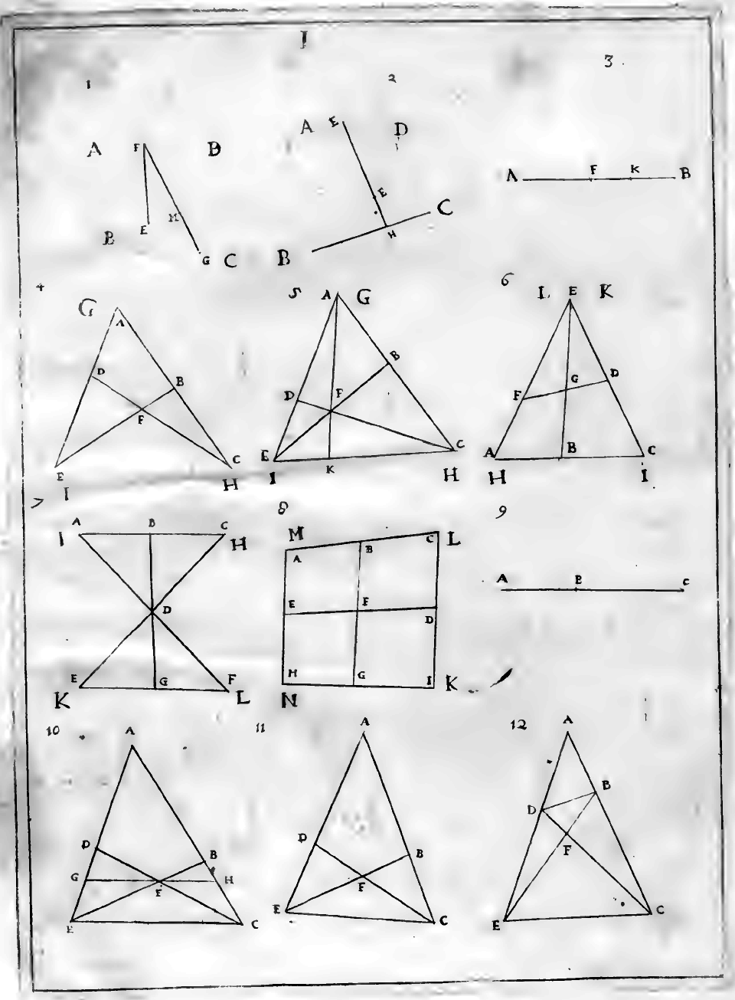
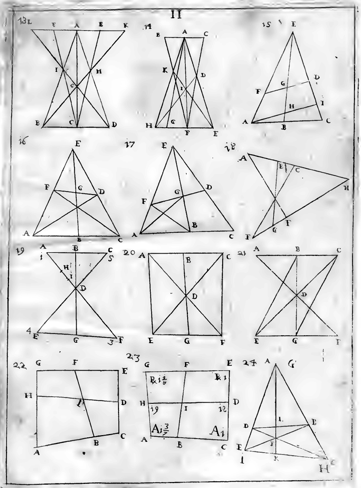
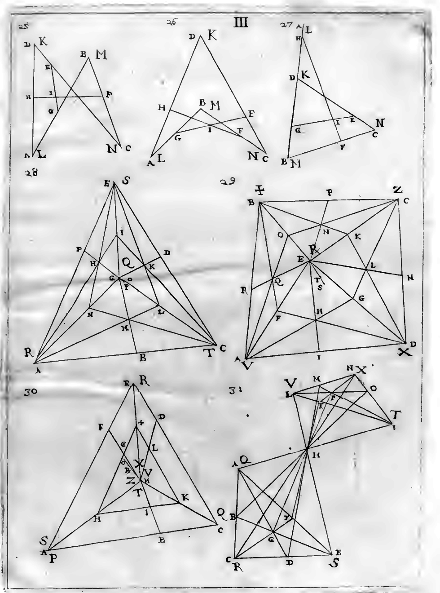
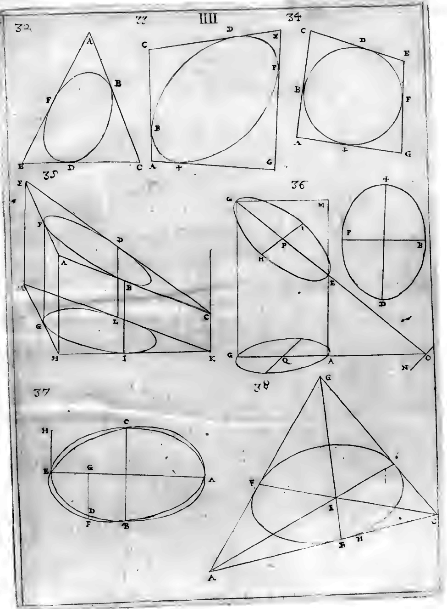
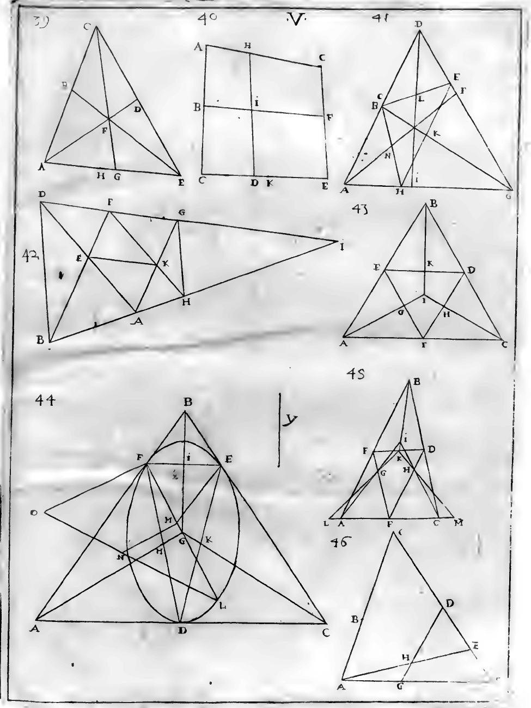
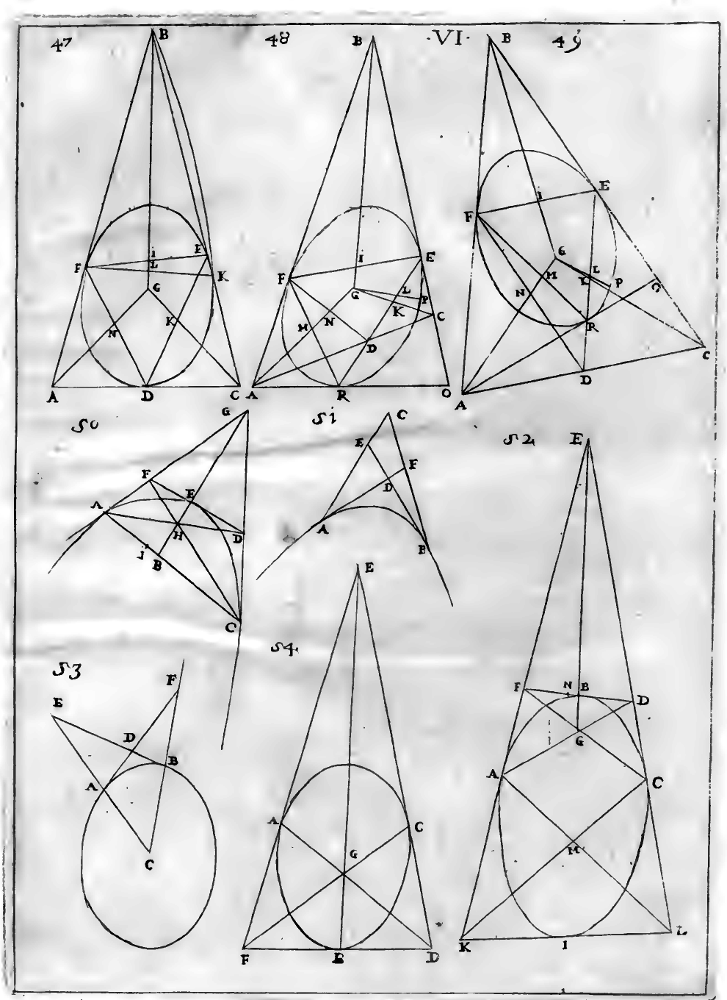
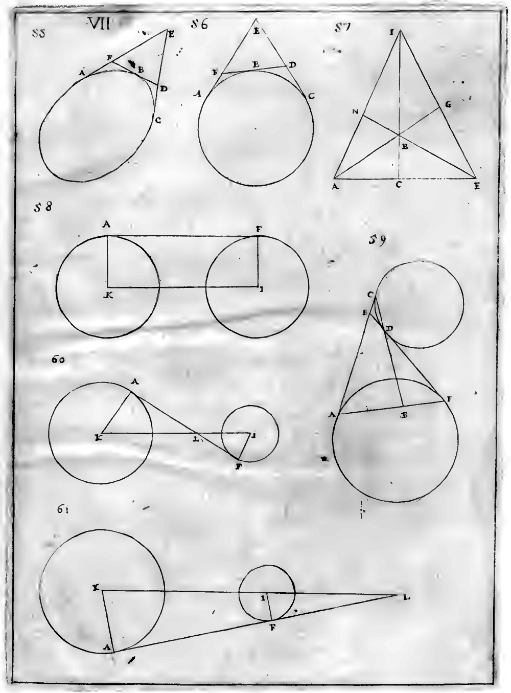
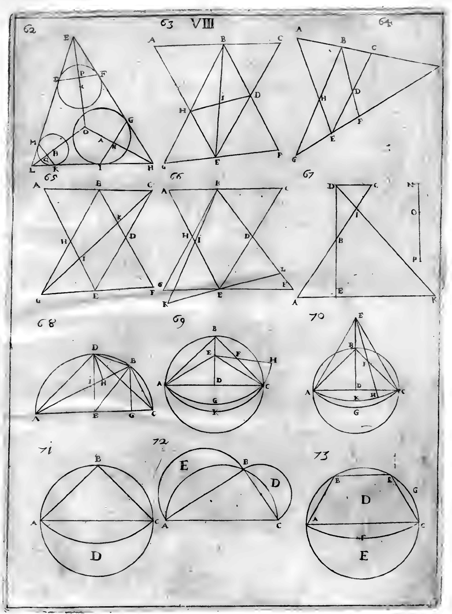
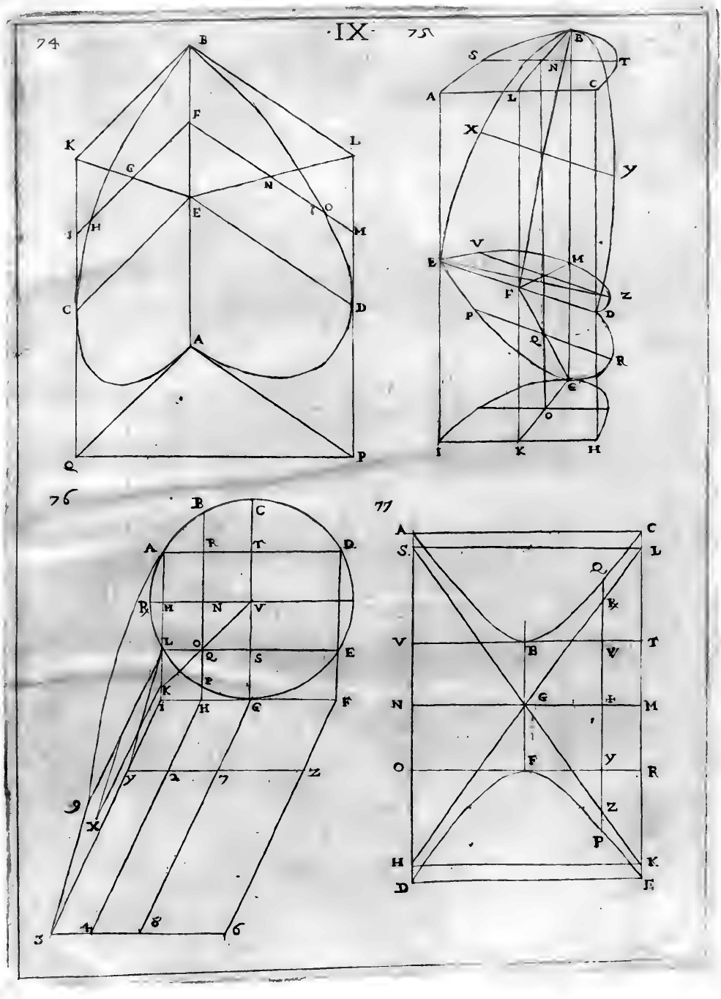
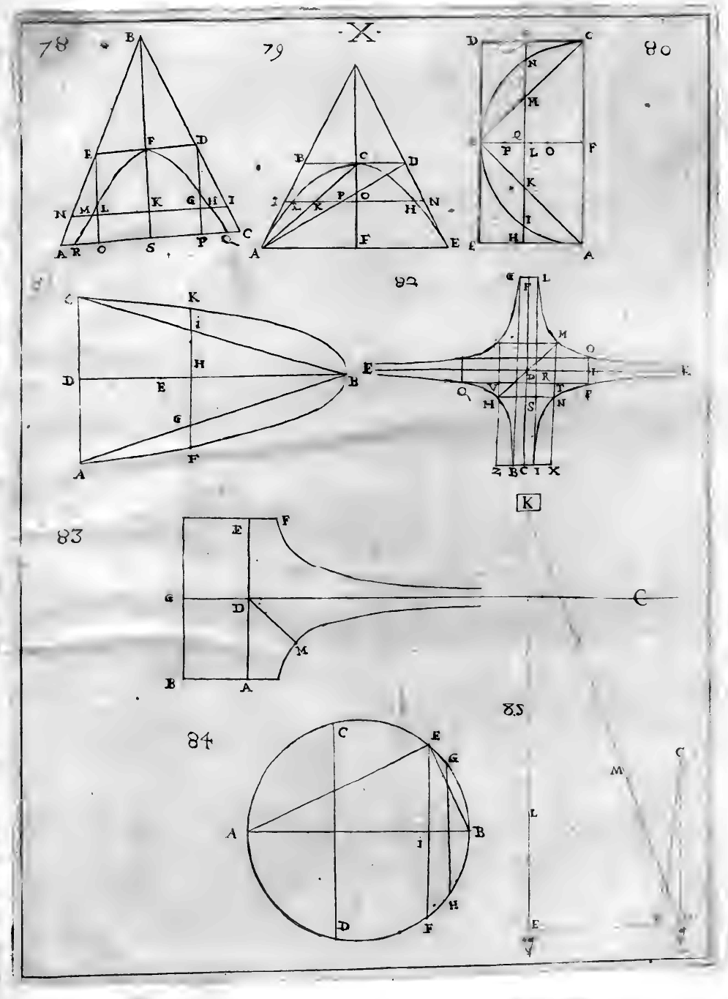

Tabulae Decem Aeneae (Tab. I–X, Figg. 1–85)¶




















TABVLAE DECEM AENEAE (TAB. I–X, FIGG. 1–85) (folia 0103–0126).
Decem tabulae aeneae plicatiles in fine voluminis compactae omnes octoginta quinque figuras geometricas totius operis continent (Tab. I: 1–12; Tab. II: 13–24; Tab. III: 25–31; Tab. IIII: 32–38; Tab. V: 39–46; Tab. VI: 47–54; Tab. VII: 55–61; Tab. VIII: 62–73; Tab. IX: 74–77; Tab. X: 78–85), sequentibus foliis vacuis ac tegmine postico (0123–0126).